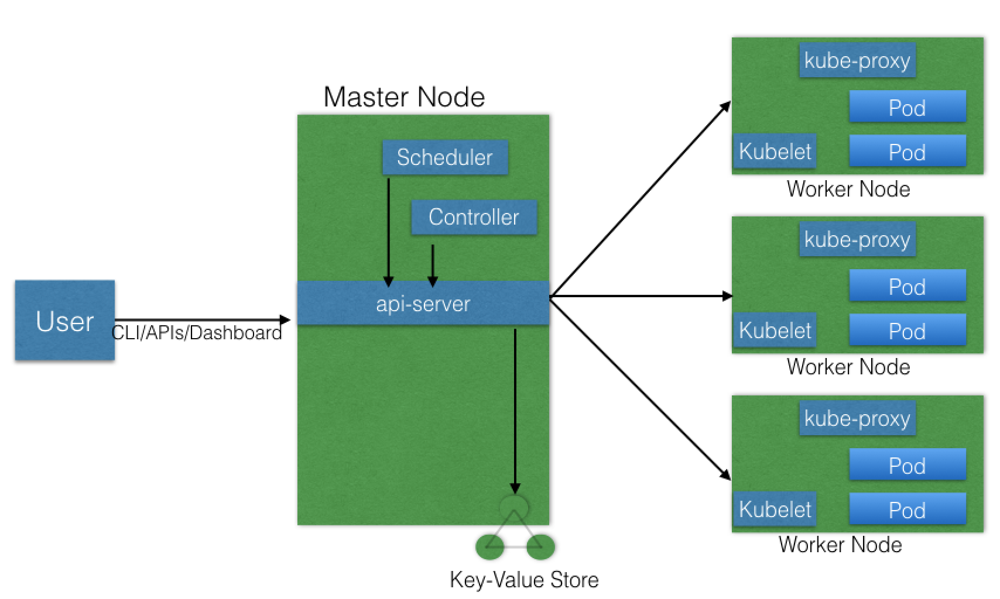

158
原有服务到microservice架构
- 重构方式：
- 停止新功能的实现，彻底重构
- 新功能用微服务方式实现，逐步重构；
- 挑战：
- 重构方式
- 用原语言实现（重用部分旧代码）更加经济；
- 设计不好的应该以新技术架构思路重新设计实现
- 与数据过分耦合的应用可能无法重构；
- 重构完成后选择机制/工具，保持所有模块的弹性；
*
container Orchestration
- 重构方式
Define the concept of container orchestration. container Microservices Container Orchestration 已知的orchestrator ，推荐学习edx151x课程https://www.edx.org/course/introduction-cloud-infrastructure-linuxfoundationx-lfs151-x，
Explain the reasons for doing container orchestration.
- Discuss different container orchestration options.
- Discuss different container orchestration deployment options.
Chapter 4. Kubernetes Architecture
4.2 the Kubernetes architecture.
- high Level arch
- One or more master nodes
- One or more worker nodes
- Distributed key-value store, such as etcd. 
- detail level architecture
- Master node
manage state of a Kubernetes cluster;has the following components:
- API server
- kube-apiserver
- Scheduler
- Controller managers
- etcd.
4.2.3 Worker Node
A worker node provides a running environment for client applications. Though containerized microservices, these applications are encapsulated in Pods, controlled by the cluster control plane agents running on the master node. Pods are scheduled on worker nodes, where they find required compute, memory and storage resources to run, and networking to talk to each other and the outside world. A Pod is the smallest scheduling unit in Kubernetes. It is a logical collection of one or more containers scheduled together. We will explore them further in later chapters. worker节点为客户端应用程序提供运行环境。通过容器化的微服务，这些应用程序被封装在Pods中，由运行在主节点上的集群控制平面代理控制。pod被安排在worker节点上，在那里它们可以找到运行所需的计算、内存和存储资源，并可以通过网络与彼此和外部世界进行通信。Pod是Kubernetes中最小的调度单元。它是一个或多个编排在一起的容器的逻辑集合。我们将在后面的章节中进一步探讨它们。 Kubernetes Worker Node
Kubernetes Worker Node
- API server
- Master node
manage state of a Kubernetes cluster;has the following components:
Also, to access the applications from the external world, we connect to worker nodes and not to the master node. We will dive deeper into this in future chapters. 同时，从外部世界访问应用程序时，我们连接到工作节点而不是主节点。我们将在以后的章节中深入探讨这个问题。
Worker Node Components
A worker node has the following components:
- Container runtime
- kubelet
- kube-proxy
- Addons for DNS, Dashboard, cluster-level monitoring and logging.
In the next few sections, we will discuss them in more detail.
工作节点具有以下组件：
- 容器运行时
- kubelet
- kube-proxy
- 用于DNS、Dashboard、集群级监控和日志记录的加载项。
在接下来的几节中，我们将更详细地讨论它们。
Container Runtime
Although Kubernetes is described as a "container orchestration engine", it does not have the capability to directly handle containers. In order to run and manage a container's lifecycle, Kubernetes requires a container runtime on the node where a Pod and its containers are to be scheduled. Kubernetes supports many container runtimes:
Docker - although a container platform which uses containerd as a container runtime, it is the most widely used container runtime with Kubernetes CRI-O - a lightweight container runtime for Kubernetes, it also supports Docker image registries containerd - a simple and portable container runtime providing robustness rkt - a pod-native container engine, it also runs Docker images rktlet - a Kubernetes Container Runtime Interface (CRI) implementation using rkt. 尽管Kubernetes被描述为一个“容器编排引擎”，但它没有直接处理容器的能力。为了运行和管理容器的生命周期，Kubernetes需要在Pod及其容器的调度节点上有一个容器运行时。Kubernetes支持许多容器运行时：
- Docker - 虽然是一个使用containerd作为容器运行时的容器平台，但它是Kubernetes最广泛使用的容器运行时
- CRI-O-一个用于Kubernetes的轻量级容器运行时，它还支持Docker映像注册
- containerd — 提供健壮性的简单可移植的容器运行时
- rkt - 一个pod本地容器引擎，它还运行Docker映像
- rktlet - 一个使用rkt的Kubernetes容器运行时接口（CRI）实现。
kubelet
The kubelet is an agent running on each node and communicates with the control plane components from the master node. It receives Pod definitions, primarily from the API server, and interacts with the container runtime on the node to run containers associated with the Pod. It also monitors the health of the Pod's running containers.
The kubelet connects to the container runtime using Container Runtime Interface (CRI). CRI consists of protocol buffers, gRPC API, and libraries.
kubelet是运行在每个节点上的代理，并与主节点的控制平面组件通信。它主要从API server接收Pod定义，并与节点上的容器运行时交互以运行与Pod相关的容器。它还监测吊舱运行容器的健康状况。
kubelet使用容器运行时接口（container runtime Interface，CRI）连接到容器运行时。CRI由协议缓冲区、gRPC API和库组成
 Container Runtime Interface
(Retrieved from blog.kubernetes.io)
As shown above, the kubelet acting as grpc client connects to the CRI shim acting as grpc server to perform container and image operations. CRI implements two services: ImageService and RuntimeService. The ImageService is responsible for all the image-related operations, while the RuntimeService is responsible for all the Pod and container-related operations.
Container runtimes used to be hard-coded in Kubernetes, but with the development of CRI, Kubernetes is more flexible now and uses different container runtimes without the need to recompile. Any container runtime that implements CRI can be used by Kubernetes to manage Pods, containers, and container images.
In the next section, we will discuss some of the CRI shims.
如上所示，充当grpc客户端的kubelet连接到充当grpc服务器的CRI shim，以执行容器和image操作。CRI实现了两个服务：ImageService和RuntimeService。ImageService负责所有与image相关的操作，RuntimeService负责所有与Pod和容器相关的操作。
容器运行时在Kubernetes中是写死的，但是随着CRI的发展，Kubernetes现在更加灵活，并且使用不同的容器运行时而不需要重新编译。Kubernetes可以使用任何实现CRI的容器运行时来管理pod、容器和容器映像。
在下一节中，我们将讨论一些CRI Shim。
Container Runtime Interface
(Retrieved from blog.kubernetes.io)
As shown above, the kubelet acting as grpc client connects to the CRI shim acting as grpc server to perform container and image operations. CRI implements two services: ImageService and RuntimeService. The ImageService is responsible for all the image-related operations, while the RuntimeService is responsible for all the Pod and container-related operations.
Container runtimes used to be hard-coded in Kubernetes, but with the development of CRI, Kubernetes is more flexible now and uses different container runtimes without the need to recompile. Any container runtime that implements CRI can be used by Kubernetes to manage Pods, containers, and container images.
In the next section, we will discuss some of the CRI shims.
如上所示，充当grpc客户端的kubelet连接到充当grpc服务器的CRI shim，以执行容器和image操作。CRI实现了两个服务：ImageService和RuntimeService。ImageService负责所有与image相关的操作，RuntimeService负责所有与Pod和容器相关的操作。
容器运行时在Kubernetes中是写死的，但是随着CRI的发展，Kubernetes现在更加灵活，并且使用不同的容器运行时而不需要重新编译。Kubernetes可以使用任何实现CRI的容器运行时来管理pod、容器和容器映像。
在下一节中，我们将讨论一些CRI Shim。
kubelet - CRI shims
Below you will find some examples of CRI shims:
- dockershim
With dockershim, containers are created using Docker installed on the worker nodes. Internally, Docker uses containerd to create and manage containers.
 dockershim
(Retrieved from blog.kubernetes.io)
使用dockershim，容器是使用安装在工作节点上的Docker创建的。在内部，Docker使用containerd创建和管理容器。
dockershim
(Retrieved from blog.kubernetes.io)
使用dockershim，容器是使用安装在工作节点上的Docker创建的。在内部，Docker使用containerd创建和管理容器。 - cri-containerd
With cri-containerd, we can directly use Docker's smaller offspring containerd to create and manage containers.
使用cri-containerd，我们可以直接使用Docker更小的子程序containerd来创建和管理容器。

- CRI-O CRI-O enables using any Open Container Initiative (OCI) compatible runtimes with Kubernetes. At the time this course was created, CRI-O supported runC and Clear Containers as container runtimes. However, in principle, any OCI-compliant runtime can be plugged-in.
CRI-O
CRI-O enables using any Open Container Initiative (OCI) compatible runtimes with Kubernetes. At the time this course was created, CRI-O supported runC and Clear Containers as container runtimes. However, in principle, any OCI-compliant runtime can be plugged-in.
CRI-O支持使用任何与Kubernetes兼容的开放容器倡议（OCI）的运行时。在创建本课程时，CRI-O支持runC和Clear Containers作为容器运行时。但是，原则上，任何符合OCI的运行时都可以插入。

kube-proxy
The kube-proxy is the network agent which runs on each node responsible for dynamic updates and maintenance of all networking rules on the node. It abstracts the details of Pods networking and forwards connection requests to Pods. We will explore Pod networking in more detail in later chapters. kube代理是运行在每个节点上的网络代理，负责动态更新和维护节点上的所有网络规则。它抽象了Pods网络的细节，并将连接请求转发给Pods。 我们将在后面的章节中更详细地探讨Pod网络。
Addons
Addons are cluster features and functionality not yet available in Kubernetes, therefore implemented through 3rd-party pods and services.
DNS - cluster DNS is a DNS server required to assign DNS records to Kubernetes objects and resources Dashboard - a general purposed web-based user interface for cluster management Monitoring - collects cluster-level container metrics and saves them to a central data store Logging - collects cluster-level container logs and saves them to a central log store for analysis. Addon是Kubernetes中尚未提供的集群特性和功能，因此通过第三方pod和服务实现。
- DNS-集群DNS是将DNS记录分配给Kubernetes对象和资源所需的DNS服务器
- Dashboard-一个通用的基于web的集群管理用户界面
- 监视-收集集群级容器度量并将其保存到中心数据存储
- 日志记录-收集群集级容器日志，并将其保存到中心日志存储以进行分析。
Networking Challenges
Decoupled microservices based applications rely heavily on networking in order to mimic the tight-coupling once available in the monolithic era. Networking, in general, is not the easiest to understand and implement. Kubernetes is no exception - as a containerized microservices orchestrator is needs to address 4 distinct networking challenges:
Container-to-container communication inside Pods Pod-to-Pod communication on the same node and across cluster nodes Pod-to-Service communication within the same namespace and across cluster namespaces External-to-Service communication for clients to access applications in a cluster. All these networking challenges must be addressed before deploying a Kubernetes cluster. Next, we will see how we solve these challenges. 基于解耦的微服务的应用程序在很大程度上依赖于网络，以模拟在单一程序时代曾经存在的紧密耦合。一般来说，网络并不是最容易理解和实现的。Kubernetes也不例外-作为一个容器化的微服务编排器，需要解决4个不同的网络挑战：
- Pods内容器对容器的通信
- 同一节点上或集群节点之间的Pod-to-Pod通信
- Pod到服务 在同一命名空间内和跨集群命名空间的通信
- 外部到服务的通信，以便客户端访问集群中的应用程序。 在部署Kubernetes集群之前，必须解决所有这些网络挑战。接下来，我们将看看如何解决这些挑战。
Container-to-Container Communication Inside Pods
Making use of the underlying host operating system's kernel features, a container runtime creates an isolated network space for each container it starts. On Linux, that isolated network space is referred to as a network namespace. A network namespace is shared across containers, or with the host operating system.
When a Pod is started, a network namespace is created inside the Pod, and all containers running inside the Pod will share that network namespace so that they can talk to each other via localhost. 利用底层主机操作系统的内核特性，容器运行时为它启动的每个容器创建一个独立的网络空间。在Linux上，隔离的网络空间称为网络命名空间。网络命名空间是跨容器或与主机操作系统共享的。 当Pod启动时，在Pod内创建一个网络名称空间，运行在Pod内的所有容器都将共享该网络名称空间，以便它们可以通过localhost相互通信。
Pod-to-Pod Communication Across Nodes
In a Kubernetes cluster Pods are scheduled on nodes randomly. Regardless of their host node, Pods are expected to be able to communicate with all other Pods in the cluster, all this without the implementation of Network Address Translation (NAT). This is a fundamental requirement of any networking implementation in Kubernetes.
The Kubernetes network model aims to reduce complexity, and it treats Pods as VMs on a network, where each VM receives an IP address - thus each Pod receiving an IP address. This model is called "IP-per-Pod" and ensures Pod-to-Pod communication, just as VMs are able to communicate with each other.
Let's not forget about containers though. They share the Pod's network namespace and must coordinate ports assignment inside the Pod just as applications would on a VM, all while being able to communicate with each other on localhost - inside the Pod. However, containers are integrated with the overall Kubernetes networking model through the use of the Container Network Interface (CNI) supported by CNI plugins. CNI is a set of a specification and libraries which allow plugins to configure the networking for containers. While there are a few core plugins, most CNI plugins are 3rd-party Software Defined Networking (SDN) solutions implementing the Kubernetes networking model. In addition to addressing the fundamental requirement of the networking model, some networking solutions offer support for Network Policies. Flannel, Weave, Calico are only a few of the SDN solutions available for Kubernetes clusters.
在Kubernetes集群中，pod被随机地安排在节点上。不管它们的主机节点是什么，pod都可以与集群中的所有其他pod通信，而无需实现网络地址转换（Network Address Translation，NAT）。这是Kubernetes中任何网络实现的基本要求。
KubNetes网络模型旨在降低复杂性，并将POD视为网络上的VMS，其中每个VM接收IP地址-因此每个POD接收IP地址。这个模型被称为“IP-per-Pod”，确保了Pod到Pod的通信，就像vm能够相互通信一样。
不过，别忘了容器。它们共享Pod的网络名称空间，必须像VM上的应用程序那样协调Pod内的端口分配，同时能够在本地主机（Pod内）上相互通信。然而，通过使用CNI插件支持的容器网络接口（CNI），容器与整个Kubernetes网络模型集成。CNI是一组规范和库，允许插件为容器配置网络。虽然有一些核心插件，但大多数CNI插件是实现Kubernetes网络模型的第三方软件定义网络（SDN）解决方案。除了满足网络模型的基本要求外，一些网络解决方案还为网络策略提供支持。Flannel, Weave, Calico 只是Kubernetes集群可用的SDN解决方案的其中几个。
 The container runtime offloads the IP assignment to CNI, which connects to the underlying configured plugin, such as Bridge or MACvlan, to get the IP address. Once the IP address is given by the respective plugin, CNI forwards it back to the requested container runtime.
The container runtime offloads the IP assignment to CNI, which connects to the underlying configured plugin, such as Bridge or MACvlan, to get the IP address. Once the IP address is given by the respective plugin, CNI forwards it back to the requested container runtime.
For more details, you can explore the Kubernetes documentation. 容器运行时将IP分配的任务发到CNI，CNI连接到底层配置的插件（如Bridge或MACvlan）以获取IP地址。一旦IP地址由相应的插件给出，CNI就会将其转发回请求的容器运行时。
有关更多详细信息，可以浏览Kubernetes文档。
Pod-to-External World Communication
For a successfully deployed containerized applications running in Pods inside a Kubernetes cluster, it requires accessibility from the outside world. Kubernetes enables external accessibility through services, complex constructs which encapsulate networking rules definitions on cluster nodes. By exposing services to the external world with kube-proxy, applications become accessible from outside the cluster over a virtual IP.
We will have a complete chapter dedicated to this, so we will dive into this later. 对于在Kubernetes集群内的Pods中运行的成功部署的容器化应用程序，它需要来自外部世界的可访问性。Kubernetes通过服务实现外部可访问性，这些服务是封装集群节点上的网络规则定义的复杂构造。通过使用kube代理将服务公开给外部世界，应用程序可以通过虚拟IP从集群外部访问。 我们将有一个完整的章节专门讨论这个问题，所以我们稍后将深入讨论这个问题。
Chapter 5. Installing Kubernetes
Introduction and Learning Objectives
In this chapter, we will first discuss about the different configurations in which Kubernetes can be installed. We will then discuss about the infrastructure requirements to install Kubernetes, and we will also look at some of the tools which can help us with the installation. 在本章中，我们将首先讨论可以安装Kubernetes的不同配置。然后，我们将讨论安装Kubernetes所需的基础设施，我们还将介绍一些可以帮助我们进行安装的工具。 By the end of this chapter, you should be able to: 在本章结束时，您应该能够：
- Discuss about the different Kubernetes configuration options. 讨论不同的Kubernetes配置选项。
- Discuss infrastructure considerations before installing Kubernetes. 在安装Kubernetes之前讨论基础设施考虑事项。
- Discuss infrastructure choices for a Kubernetes deployment. 讨论Kubernetes部署的基础设施选择。
- Review Kubernetes installation tools and resources. 回顾Kubernetes安装工具和资源。
Installing Kubernetes
Kubernetes Configuration
Kubernetes can be installed using different configurations. The four major installation types are briefly presented below: 可以使用不同的配置安装Kubernetes。以下简要介绍四种主要安装类型：
- All-in-One Single-Node Installation 一体式单节点安装 In this setup, all the master and worker components are installed and running on a single-node. While it is useful for learning, development, and testing, and it should not be used in production. Minikube is one such example, and we are going to explore it in future chapters. 在此设置中，所有主组件和工作组件都安装在一个节点上并运行。虽然它对学习、开发和测试很有用，但不应在生产中使用。Minikube就是这样一个例子，我们将在以后的章节中对此进行探讨。
- Single-Node etcd, Single-Master and Multi-Worker Installation 单节点etcd，单主多工安装 In this setup, we have a single-master node, which also runs a single-node etcd instance. Multiple worker nodes are connected to the master node. 在这个设置中，我们有一个主节点，它也运行一个节点etcd实例。多个工作节点连接到主节点。
- Single-Node etcd, Multi-Master and Multi-Worker Installation 单节点etcd，多主多工安装 In this setup, we have multiple-master nodes configured in HA mode, but we have a single-node etcd instance. Multiple worker nodes are connected to the master nodes. 在这个设置中，我们在HA模式下配置了多个主节点，但是我们有一个单节点etcd实例。多个工作节点连接到主节点。
- Multi-Node etcd, Multi-Master and Multi-Worker Installation
多节点etcd、多主多工安装
In this mode, etcd is configured in clustered HA mode, the master nodes are all configured in HA mode, connecting to multiple worker nodes. This is the most advanced and recommended production setup.
在此模式下，etcd配置为集群HA模式，主节点都配置为HA模式，连接到多个工作节点。这是最先进和推荐的生产设置。
Infrastructure for Kubernetes Installation
Once we decide on the installation type, we also need to make some infrastructure-related decisions, such as: 一旦我们决定了安装类型，我们还需要做出一些与基础设施相关的决定，例如： - Should we set up Kubernetes on bare metal, public cloud, or private cloud? 我们应该在裸机、公共云或私有云上设置Kubernetes吗？
- Which underlying OS should we use? Should we choose RHEL, CoreOS, CentOS, or something else? 我们应该使用哪些底层操作系统？我们应该选择莱尔、科罗斯、森托斯还是别的什么？
- Which networking solution should we use?
我们应该使用哪种网络解决方案？
And so on.
等等。
Explore the Kubernetes documentation for details on choosing the right solution. Next, we will take a closer look at these solutions.
有关选择正确解决方案的详细信息，请参阅Kubernetes文档。接下来，我们将仔细研究这些解决方案。
Localhost Installation
These are only a few localhost installation options available to deploy single- or multi-node Kubernetes clusters on our workstation/laptop: 以下只是几个本地主机安装选项，可用于在工作站/笔记本电脑上部署单节点或多节点Kubernetes群集： - Minikube - single-node local Kubernetes cluster Minikube-单节点本地Kubernetes集群
- Docker Desktop - single-node local Kubernetes cluster for Windows and Mac Docker桌面-用于Windows和Mac的单节点本地Kubernetes群集
- CDK on LXD - multi-node local cluster with LXD containers.
LXD上的CDK-具有LXD容器的多节点本地群集。
Minikube is the preferred and recommended way to create an all-in-one Kubernetes setup locally. We will be using it extensively in this course.
Minikube是在本地创建一体式Kubernetes设置的首选和推荐方法。我们将在本课程中广泛使用它。
On-Premise Installation
Kubernetes can be installed on-premise on VMs and bare metal. Kubernetes可以安装在虚拟机和裸机上。 - On-Premise VMs 内部虚拟机 Kubernetes can be installed on VMs created via Vagrant, VMware vSphere, KVM, or another Configuration Management (CM) tool in conjunction with a hypervisor software. There are different tools available to automate the installation, such as Ansible or kubeadm. Kubernetes可以安装在通过Vagrant、VMware vSphere、KVM或另一个配置管理（CM）工具和管理程序软件创建的vm上。有不同的工具可用于自动化安装，如ansibe或kubeadm。
- On-Premise Bare Metal
内部裸机
Kubernetes can be installed on on-premise bare metal, on top of different operating systems, like RHEL, CoreOS, CentOS, Fedora, Ubuntu, etc. Most of the tools used to install Kubernetes on VMs can be used with bare metal installations as well.
Kubernetes可以安装在本地裸机上，在不同的操作系统之上，如RHEL、CoreOS、CentOS、Fedora、Ubuntu等。大多数用于在vm上安装Kubernetes的工具也可以用于裸机安装。
Cloud Installation
Kubernetes can be installed and managed on almost any cloud environment: Kubernetes几乎可以在任何云环境中安装和管理： - Hosted Solutions
托管解决方案
With Hosted Solutions, any given software is completely managed by the provider. The user pays hosting and management charges. Some of the vendors providing hosted solutions for Kubernetes are:
对于托管解决方案，任何给定的软件都完全由提供商管理。用户支付托管和管理费用。为Kubernetes提供托管解决方案的一些供应商包括：
- Google Kubernetes Engine (GKE) 谷歌Kubernetes引擎（GKE）
- Azure Kubernetes Service (AKS) Azure Kubernetes服务（AKS）
- Amazon Elastic Container Service for Kubernetes (EKS) 针对Kubernetes的Amazon弹性容器服务（EKS）
- DigitalOcean Kubernetes
- OpenShift Dedicated
- Platform9
- IBM Cloud Kubernetes Service. IBM云Kubernetes服务。
- Turnkey Cloud Solutions
交钥匙云解决方案
Below are only a few of the Turnkey Cloud Solutions, to install Kubernetes with just a few commands on an underlying IaaS platform, such as:
下面只是几个交钥匙云解决方案，在底层IaaS平台上安装Kubernetes时只需要几个命令，例如：
- Google Compute Engine (GCE) 谷歌计算引擎（GCE）
- Amazon AWS (AWS EC2) 亚马逊AWS（AWS EC2）
- Microsoft Azure (AKS). 微软Azure（AKS）。
- Turnkey On-Premise Solutions
交钥匙内部解决方案
The On-Premise Solutions install Kubernetes on secure internal private clouds with just a few commands:
本地解决方案只需几个命令就可以在安全的内部私有云上安装Kubernetes：
- GKE On-Prem by Google Cloud
- IBM Cloud Private
- OpenShift Container Platform by Red Hat.
用红帽打开集装箱平台。
Kubernetes Installation Tools/Resources
While discussing installation configuration and the underlying infrastructure, let's take a look at some useful tools/resources available: 在讨论安装配置和底层基础结构时，让我们看看一些有用的工具/资源：
- kubeadm kubeadm is a first-class citizen on the Kubernetes ecosystem. It is a secure and recommended way to bootstrap a single- or multi-node Kubernetes cluster. It has a set of building blocks to setup the cluster, but it is easily extendable to add more features. Please note that kubeadm does not support the provisioning of hosts. kubeadm是Kubernetes生态系统的一等公民。这是一种安全且推荐的引导单节点或多节点Kubernetes集群的方法。它有一组构建块来设置集群，但是它很容易扩展以添加更多特性。请注意，kubeadm不支持提供主机。
- kubespray With kubespray (formerly known as kargo), we can install Highly Available Kubernetes clusters on AWS, GCE, Azure, OpenStack, or bare metal. Kubespray is based on Ansible, and is available on most Linux distributions. It is a Kubernetes Incubator project. 使用kubespray（以前称为kargo），我们可以在AWS、GCE、Azure、OpenStack或裸机上安装高度可用的Kubernetes集群。Kubespray基于ansibe，在大多数Linux发行版上都可用。这是一个库伯内特斯孵化器项目。
- kops With kops, we can create, destroy, upgrade, and maintain production-grade, highly-available Kubernetes clusters from the command line. It can provision the machines as well. Currently, AWS is officially supported. Support for GCE is in beta, and VMware vSphere in alpha stage, and other platforms are planned for the future. Explore the kops project for more details. 使用kops，我们可以从命令行创建、销毁、升级和维护生产级、高可用的Kubernetes集群。它也能提供机器。目前，AWS得到了官方支持。对GCE的支持处于beta测试阶段，VMware vSphere处于alpha阶段，其他平台计划在未来推出。探索kops项目了解更多细节。
- kube-aws
With kube-aws we can create, upgrade and destroy Kubernetes clusters on AWS from the command line. Kube-aws is also a Kubernetes Incubator project.
使用kube aws，我们可以从命令行创建、升级和销毁aws上的Kubernetes集群。Kube aws也是Kubernetes孵化器项目。
If the existing solutions and tools do not fit our requirements, then we can install Kubernetes from scratch (although a dated link from Kubernetes v1.12, it is still a valid solution).
如果现有的解决方案和工具不符合我们的要求，那么我们可以从头开始安装Kubernetes（尽管来自KubNeNETV1.12的一个过时的链接，它仍然是一个有效的解决方案）。
It is worth checking out the Kubernetes The Hard Way GitHub project by Kelsey Hightower, which shares the manual steps involved in bootstrapping a Kubernetes cluster.
值得一看的是Kelsey Hightower的Kubernetes the Hard Way GitHub项目，该项目共享引导Kubernetes集群所涉及的手动步骤。
Chapter 6. Minikube - A Local Single-Node Kubernetes Cluster
Introduction and Learning Objectives
As we mentioned in the previous chapter, Minikube is the easiest and most recommended way to run an all-in-one Kubernetes cluster locally on our workstations. In this chapter, we will explore the requirements to install Minikube locally on our workstation, together with the installation instructions to set it up on local Linux, macOS, and Windows operating systems. 如前一章所述，Minikube是在工作站上本地运行一体式Kubernetes集群的最简单和最推荐的方法。在本章中，我们将探讨在工作站上本地安装Minikube的要求，以及在本地Linux、macOS和Windows操作系统上设置Minikube的安装说明。 By the end of this chapter, you should be able to: 在本章结束时，您应该能够： - Discuss Minikube. 讨论Minikube。
- Install Minikube on local Linux, macOS, and Windows workstation. 在本地Linux、macOS和Windows工作站上安装Minikube。
- Verify the local installation.
验证本地安装。
Minikube - A Local Single-Node Kubernetes Cluster
Minikube is installed and runs directly on a local Linux, macOS, or Windows workstation. However, in order to fully take advantage of all the features Minikube has to offer, a Type-2 Hypervisor should be installed on the local workstation, to run in conjunction with Minikube. This does not mean that we need to create any VMs with guest operating systems with this Hypervisor. Minikube是直接在本地Linux、macOS或Windows工作站上安装和运行的。但是，为了充分利用Minikube提供的所有功能，需要在本地工作站上安装一个Type-2管理程序，与Minikube一起运行。这并不意味着我们需要用这个Hypervisor创建任何带有guest操作系统的vm。 Minikube builds all its infrastructure as long as the Type-2 Hypervisor is installed on our workstation. Minikube invokes the Hypervisor to create a single VM which then hosts a single-node Kubernetes cluster. Thus we need to make sure that we have the necessary hardware and software required by Minikube to build its environment. Below we outline the requirements to run Minikube on our local workstation: Minikube构建它的所有基础设施，只要在我们的工作站上安装了Type-2 Hypervisor。Minikube调用Hypervisor创建一个VM，然后托管一个节点Kubernetes集群。因此，我们需要确保我们拥有Minikube构建其环境所需的必要硬件和软件。下面我们概述了在本地工作站上运行Minikube的要求： - kubectl kubectl is a binary used to access and manage any Kubernetes cluster. It is installed separately from Minikube. Since we will install kubectl after the Minikube installation, we may see warnings during the Minikube initialization - safe to disregard for the time being, but do keep in mind that we will have to install kubectl to be able to manage the Kubernetes cluster. We will explore kubectl in more detail in future chapters. kubectl是用于访问和管理任何Kubernetes集群的二进制文件。它与Minikube分开安装。因为我们将在Minikube安装之后安装kubectl，所以我们可能会在Minikube初始化期间看到警告-暂时可以忽略，但请记住，我们必须安装kubectl才能管理Kubernetes集群。我们将在以后的章节中更详细地探讨kubectl。
- Type-2 Hypervisor
- On Linux, VirtualBox or KVM 在Linux用 VirtualBox或KVM上
- On macOS VirtualBox, HyperKit, or VMware Fusion 在macOS用VirtualBox、HyperKit或VMware Fusion上
- On Windows VirtualBox or Hyper-V 在Windows VirtualBox或Hyper-V上 NOTE: Minikube supports a --vm-driver=none option that runs the Kubernetes components directly on the host OS and not inside a VM. With this option a Docker installation is required and a Linux OS on the local workstation, but no hypervisor installation. If you use --vm-driver=none, be sure to specify a bridge network for Docker. Otherwise, it might change between network restarts, causing loss of connectivity to your cluster. 注意：Minikube支持一个--vm driver=none选项，该选项直接在主机操作系统上运行Kubernetes组件，而不是在vm中运行。使用此选项，需要安装Docker和本地工作站上的Linux操作系统，但不需要安装hypervisor。如果使用--vm driver=none，请确保为Docker指定a bridge network。否则，它可能在网络重新启动之后发生变化，导致与群集的连接丢失。
- VT-x/AMD-v virtualization must be enabled on the local workstation in BIOS 必须在BIOS中的本地工作站上启用VT-x/AMD-v虚拟化
- Internet connection on first Minikube run - to download packages, dependencies, updates and pull images needed to initialize the Minikube Kubernetes cluster. Subsequent runs will require an internet connection only when new Docker images need to be pulled from a container repository or when deployed containerized applications need it. Once an image has been pulled it can be reused without an internet connection. 第一次Minikube运行时的Internet连接-下载初始化Minikube Kubernetes集群所需的包、依赖项、更新和拉取图像。只有在需要从容器存储库中提取新的Docker映像或部署的容器化应用程序需要时，后续运行才需要internet连接。一旦图像被提取，就可以在没有互联网连接的情况下重复使用。
In this chapter, we use VirtualBox as hypervisor on all three operating systems - Linux, macOS, and Windows, to allow Minikube to provision the VM which hosts the single-node Kubernetes cluster. 在本章中，我们使用VirtualBox作为所有三个操作系统（Linux、macOS和Windows）上的管理程序，以允许Minikube提供托管单节点Kubernetes集群的VM。 Read more about Minikube from the official Kubernetes documentation or GitHub. 从官方的Kubernetes文档或GitHub中阅读更多关于Minikube的信息。
Installing Minikube on Linux
Let's learn how to install Minikube v1.0.1 on Ubuntu Linux 18.04 LTS with VirtualBox v6.0 specifically.
NOTE: For other versions, the installation steps may vary! Check the Minikube installation!
Install the VirtualBox hypervisor Add the source repository for the bionic distribution (Ubuntu 18.04), download and register the public key, update and install:
$ sudo bash -c 'echo "deb https://download.virtualbox.org/virtualbox/debian bionic contrib" >> /etc/apt/sources.list'
$ wget -q https://www.virtualbox.org/download/oracle_vbox_2016.asc -O- | sudo apt-key add -
$ sudo apt-get update
$ sudo apt-get install -y virtualbox-6.0
Install Minikube We can download the latest release from the Minikube release page. At the time the course was written, the latest Minikube release was v1.0.1. Once downloaded, we need to make it executable and add it to our PATH:
$ curl -Lo minikube https://storage.googleapis.com/minikube/releases/v1.0.1/minikube-linux-amd64 && chmod +x minikube && sudo mv minikube /usr/local/bin/
NOTE: Replacing /v1.0.1/ with /latest/ will always download the latest version.
Start Minikube We can start Minikube with the minikube start command (disregard "Unable to read.../docker/config..." and "No matching credentials..." warnings):
$ minikube start
minikube v1.0.1 on linux (amd64)
Downloading Minikube ISO ...
142.88 MB / 142.88 MB [============================================] 100.00% 0s
Downloading Kubernetes v1.14.1 images in the background ...
Creating virtualbox VM (CPUs=2, Memory=2048MB, Disk=20000MB) ...
"minikube" IP address is 192.168.99.100
Configuring Docker as the container runtime ...
Version of container runtime is 18.06.3-ce
Waiting for image downloads to complete ...
Preparing Kubernetes environment ...
Downloading kubeadm v1.14.1
Downloading kubelet v1.14.1
Pulling images required by Kubernetes v1.14.1 ...
Launching Kubernetes v1.14.1 using kubeadm ...
Waiting for pods: apiserver proxy etcd scheduler controller dns
Configuring cluster permissions ...
Verifying component health .....
kubectl is now configured to use "minikube"
For best results, install kubectl: https://kubernetes.io/docs/tasks/tools/install-kubectl/
Done! Thank you for using minikube!
Check the status With the minikube status command, we display the status of Minikube:
$ minikube status
host: Running
kubelet: Running
apiserver: Running
kubectl: Correctly Configured: pointing to minikube-vm at 192.168.99.100
Stop minikube With the minikube stop command, we can stop Minikube:
$ minikube stop
Stopping "minikube" in virtualbox ...
"minikube" stopped.
Installing Minikube on macOS
太简单不翻译了 Let's learn how to install Minikube v1.0.1 on Mac OS X with VirtualBox v6.0 specifically.
NOTE: For other versions, the installation steps may vary! Check the Minikube installation!
Although VirtualBox is the default hypervisor for Minikube, on Mac OS X we can configure Minikube at startup to use another hypervisor, with the --vm-driver=xhyve or =hyperkit start option.
Install the VirtualBox hypervisor for OS X hosts Download and install the .dmg package.
Install Minikube We can download the latest release from the Minikube release page. At the time the course was written, the latest Minikube release was v1.0.1. Once downloaded, we need to make it executable and add it to our PATH:
$ curl -Lo minikube https://storage.googleapis.com/minikube/releases/v1.0.1/minikube-darwin-amd64 && chmod +x minikube && sudo mv minikube /usr/local/bin/
NOTE: Replacing /v1.0.1/ with /latest/ will always download the latest version.
Start Minikube We can start Minikube with the minikube start command (disregard "Unable to read.../docker/config..." and "No matching credentials..." warnings):
$ minikube start
minikube v1.0.1 on darwin (amd64)
Downloading Kubernetes v1.14.1 images in the background ...
Creating virtualbox VM (CPUs=2, Memory=2048MB, Disk=20000MB) ...
Downloading Minikube ISO ...
142.88 MB / 142.88 MB [============================================] 100.00% 0s
"minikube" IP address is 192.168.99.100
Configuring Docker as the container runtime ...
Version of container runtime is 18.06.3-ce
Waiting for image downloads to complete ...
Preparing Kubernetes environment ...
Downloading kubeadm v1.14.1
Downloading kubelet v1.14.1
Pulling images required by Kubernetes v1.14.1 ...
Launching Kubernetes v1.14.1 using kubeadm ...
Waiting for pods: apiserver proxy etcd scheduler controller dns
Configuring cluster permissions ...
Verifying component health .....
kubectl is now configured to use "minikube"
For best results, install kubectl: https://kubernetes.io/docs/tasks/tools/install-kubectl/
Done! Thank you for using minikube!
Check the status With the minikube status command, we display the status of Minikube:
$ minikube status
host: Running
kubelet: Running
apiserver: Running
kubectl: Correctly Configured: pointing to minikube-vm at 192.168.99.100
Stop minikube With the minikube stop command, we can stop Minikube:
$ minikube stop
Stopping "minikube" in virtualbox ...
"minikube" stopped.
Installing Minikube on Windows
太简单不翻译了备份下: Let's learn how to install Minikube 1.0.1 on Windows 10 with VirtualBox v6.0.6 specifically.
NOTE: For other versions, the installation steps may vary! Check the Minikube installation!
NOTE: Windows support is currently in experimental phase, and you may encounter issues during installation.
Install the VirtualBox hypervisor for Windows hosts Download and install the .exe package.
NOTE: Make sure Hyper-V is disabled (if prior installed and used) while running VirtualBox.
Install Minikube We can download the latest release from the Minikube release page. At the time the course was written, the latest Minikube release was v1.0.1. Once downloaded, we need to make sure it is added to our PATH.
There are two .exe packages available to download for Windows found under Minikube v1.0.1:
- minikube-windows-amd64.exe which requires to be added to the PATH: manually
- minikube-installer.exe which automatically adds the executable to the PATH. Download and install the minikube-installer.exe package found under Minikube v1.0.1.
Start Minikube We can start Minikube using the minikube start command (disregard the "Unable to read...docker\config..." and "No matching credentials..." warnings). Open the PowerShell using the Run as Administrator option and execute the following command:
PS C:\WINDOWS\system32> minikube start
minikube v1.0.1 on windows (amd64)
Downloading Kubernetes v1.14.1 images in the background ...
Creating virtualbox VM (CPUs=2, Memory=2048MB, Disk=20000MB) ...
Downloading Minikube ISO ...
0 B / 142.88 MB [-----------------------------------------------------] 0.00%
142.88 MB / 142.88 MB [============================================] 100.00% 0s
"minikube" IP address is 192.168.99.100
Configuring Docker as the container runtime ...
Version of container runtime is 18.06.3-ce
Waiting for image downloads to complete ...
Preparing Kubernetes environment ...
Downloading kubeadm v1.14.1
Downloading kubelet v1.14.1
Pulling images required by Kubernetes v1.14.1 ...
Launching Kubernetes v1.14.1 using kubeadm ...
Waiting for pods: apiserver proxy etcd scheduler controller dns
Configuring cluster permissions ...
Verifying component health .....
kubectl is now configured to use "minikube"
For best results, install kubectl: https://kubernetes.io/docs/tasks/tools/install-kubectl/
Done! Thank you for using minikube!
Check the status We can see the status of Minikube using the minikube status command. Open the PowerShell using the Run as Administrator option and execute the following command:
C:\WINDOWS\system32> minikube status
host: Running
kubelet: Running
apiserver: Running
kubectl: Correctly Configured: pointing to minikube-vm at 192.168.99.100
Stop Minikube We can stop Minikube using the minikube stop command. Open the PowerShell using the Run as Administrator option and execute the following command:
PS C:\WINDOWS\system32> minikube stop
Stopping "minikube" in virtualbox ...
"minikube" stopped.
Minikube CRI-O
According to the CRI-O website, 根据CRI-O网站， "CRI-O is an implementation of the Kubernetes CRI (Container Runtime Interface) to enable using OCI (Open Container Initiative) compatible runtimes." “CRI-O是Kubernetes CRI（容器运行时接口）的一个实现，用于启用与OCI（开放容器倡议）兼容的运行时。” Start Minikube with CRI-O as container runtime, instead of Docker, with the following command: 用CRI-O作为容器运行时而不是Docker启动Minikube，命令如下：
$ minikube start --container-runtime=cri-o
minikube v1.0.1 on linux (amd64)
Downloading Kubernetes v1.14.1 images in the background ...
Tip: Use 'minikube start -p <name>' to create a new cluster, or 'minikube delete' to delete this one.
Restarting existing virtualbox VM for "minikube" ...
Waiting for SSH access ...
"minikube" IP address is 192.168.99.100
Configuring CRI-O as the container runtime ...
Version of container runtime is 1.13.5
Waiting for image downloads to complete ...
Preparing Kubernetes environment ...
Pulling images required by Kubernetes v1.14.1 ...
Relaunching Kubernetes v1.14.1 using kubeadm ...
Waiting for pods: apiserver etcd scheduler controller
Updating kube-proxy configuration ...
Verifying component health ......
kubectl is now configured to use "minikube"
For best results, install kubectl: https://kubernetes.io/docs/tasks/tools/install-kubectl/
Done! Thank you for using minikube!
Let's login via ssh into the Minikube's VM:
$ minikube ssh
_ _
_ _ ( ) ( )
___ ___ (_) ___ (_)| |/') _ _ | |_ __
/' _ ` _ `\| |/' _ `\| || , < ( ) ( )| '_`\ /'__`\
| ( ) ( ) || || ( ) || || |\`\ | (_) || |_) )( ___/
(_) (_) (_)(_)(_) (_)(_)(_) (_)`\___/'(_,__/'`\____)
$ _
NOTE: If you try to list containers using the docker command, it will not produce any results, because Docker is not running containers:
$ sudo docker container ls
Cannot connect to the Docker daemon at unix:///var/run/docker.sock. Is the docker daemon running?
List the containers created via CRI-O container runtime with the following command:
$ sudo runc list
ID PID STATUS BUNDLE CREATED OWNER
1090869caeea44cb179d31b70ba5b6de96f10a8a5f4286536af5dac1c4312030 3661 running /run/containers/storage/overlay-containers/1090869caeea44cb179d31b70ba5b6de96f10a8a5f4286536af5dac1c4312030/userdata 2019-04-18T20:03:02.199284303Z root
1e9f8dce6d535b67822e744204098060ff92e574780a1809adbda48ad8605d06 3614 running /run/containers/storage/overlay-containers/1e9f8dce6d535b67822e744204098060ff92e574780a1809adbda48ad8605d06/userdata 2019-04-18T20:03:02.129881761Z root
1edcfc78bca52be153cc9f525d9fc64be75ccea478897004a5032f37c6c4c9dc 3812 running /run/containers/storage/overlay-containers/1edcfc78bca52be153cc9f525d9fc64be75ccea478897004a5032f37c6c4c9dc/userdata 2019-04-18T20:03:02.740669541Z root
...